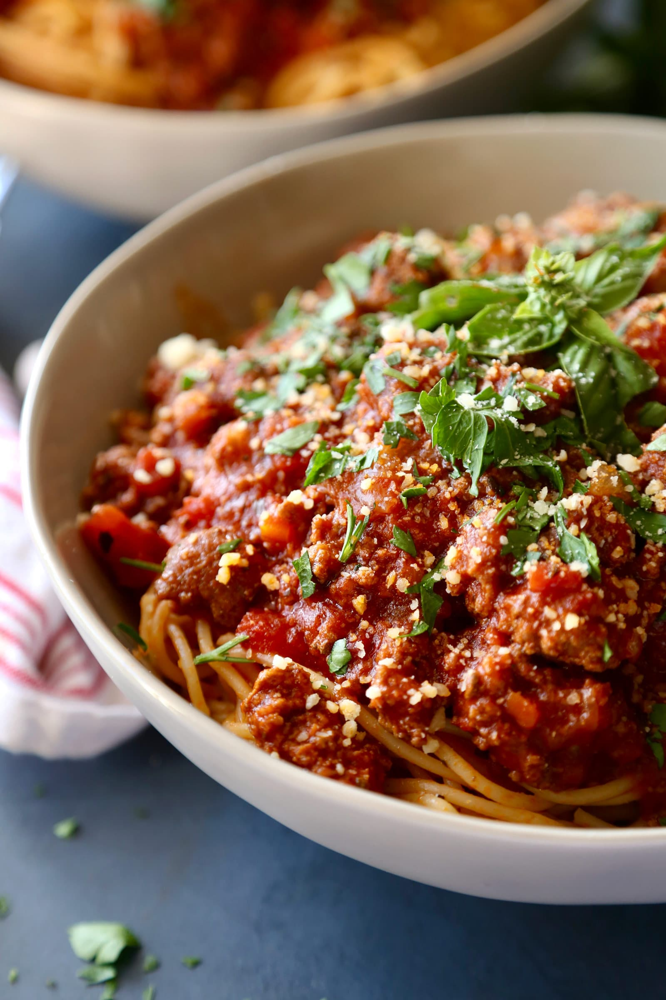

Bolognese

Description
This is the real deal, an authentic recipe for a meat sauce.
This is especially great if you to stove your meat for hours untill it's a soft and falls apart on your fork.
Ingredients
- Olive oil
- Butter
-
- Minced onion
- Minced celery
- Minced carrot
- Ground veal
- Ground pork
- Ground beef
- Finely chopped pancetta bacon
- Milk
- Tomato sauce
- Beef broth
Steps
- Heat olive oil and butter over medium heat.
- Saute onion, celery and carrots until soft.
- Add veel, pork, beef and pancetta, cook until evenly brown, about 15-20 min.
- Pour in milk and cook until evaporated, about 15 min.
- Stir in tomato sauce and beef broth.
- Cover and simmer 2,5 hours.